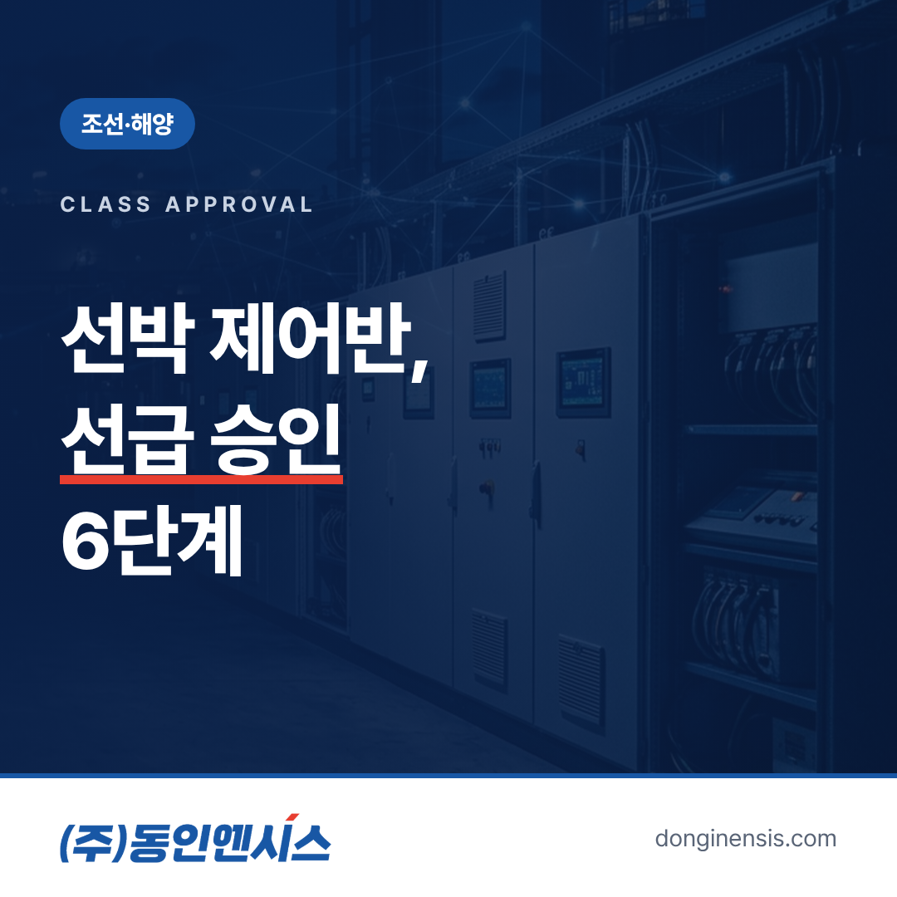
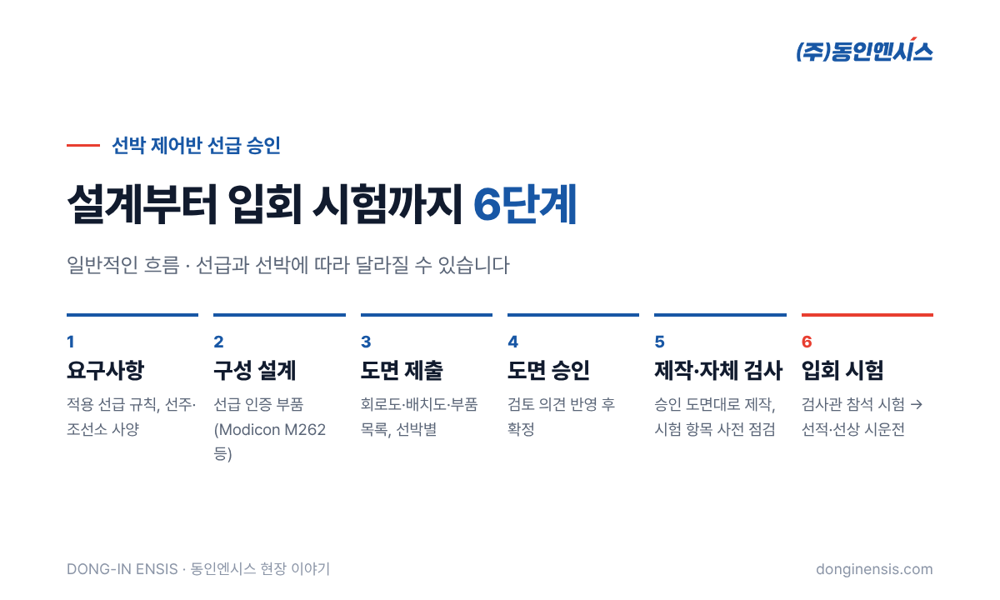
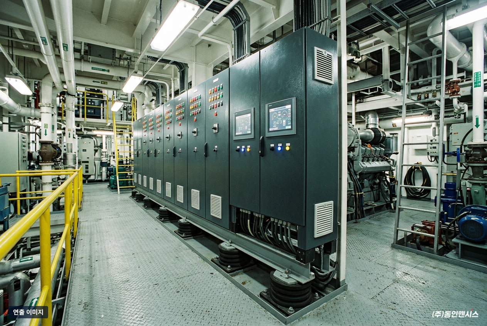
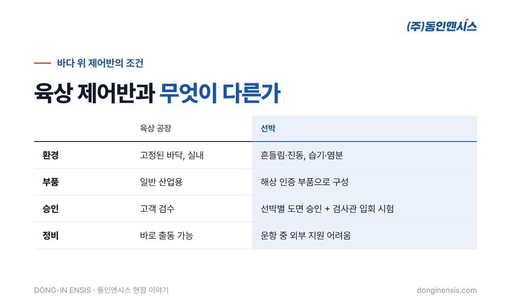
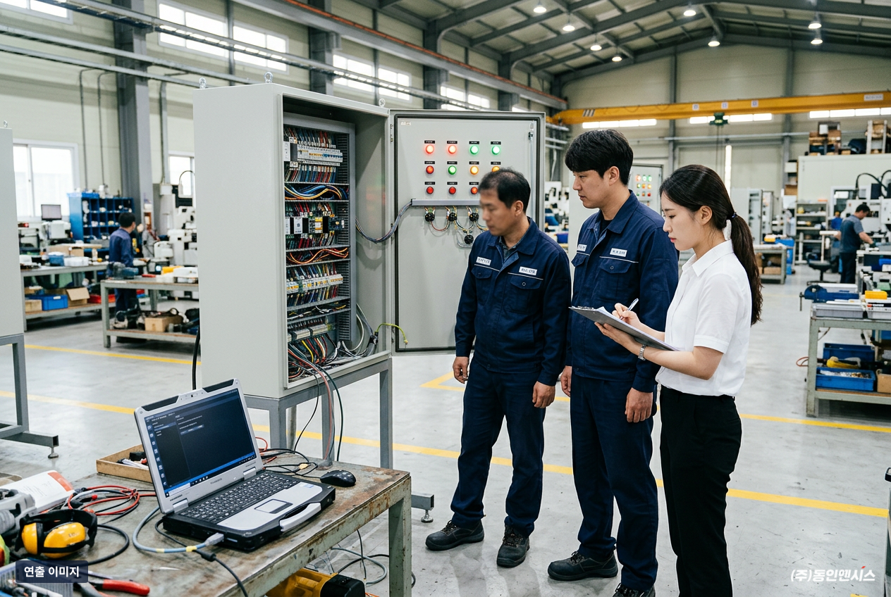

육상 공장에서는 잘 돌던 제어반도, 배에 실으려면 한 번 더 넘어야 할 문이 있습니다. 바로 선급 승인입니다. 이 글에서는 2006년부터 해상용 전기제어시스템을 만들어 온 부산의 제어반 제작사 동인엔시스가, 선박 제어반 선급 승인이 실제로 어떤 순서로 진행되는지 6단계로 정리했습니다. 조선소나 기자재 업체에서 처음 선박용 제어반을 발주하는 분께 특히 도움이 될 내용입니다.
선급은 선박이 안전하게 운항할 수 있는지 기준을 정하고 검사하는 기관입니다. 배에 들어가는 주요 장비는 이 기준을 충족한다는 확인을 받아야 하고, 제어반도 예외가 아닙니다.
바다 위의 제어반은 육상과 환경이 전혀 다릅니다. 배는 계속 흔들리고, 엔진과 프로펠러의 진동이 쉬지 않고 전해지며, 습기와 염분이 많습니다. 고장이 나도 가까운 곳에서 부품을 구하거나 사람을 부르기 어렵습니다. 그래서 설계 단계부터 "이 제어반이 바다에서 버틸 수 있는가"를 서류와 시험으로 증명하는 과정이 필요합니다.
아래는 일반적인 진행 흐름입니다. 선급과 선박에 따라 순서가 겹치거나 문서가 더해질 수 있습니다.

가장 먼저 그 배가 어느 선급의 규칙을 따르는지, 선주와 조선소가 추가로 요구하는 사항이 무엇인지 확인합니다. 같은 기능의 제어반이라도 선급과 선박 종류에 따라 필요한 문서와 시험 항목이 달라지기 때문입니다. 이 단계에서 요구사항을 정확히 잡아 두어야 뒤에서 도면을 다시 그리는 일이 줄어듭니다.
다음은 제어반에 들어갈 부품을 고르는 일입니다. 컨트롤러, 전원 장치, 차단기 같은 핵심 부품은 해상 환경에서 쓸 수 있다는 인증을 갖춘 제품으로 구성하는 것이 기본입니다.
동인엔시스 선박용 제어반에 들어가는 Modicon M262 컨트롤러는 여러 선급이 서로 인정하는 상호인정 인증서를 갖추고 있어, 선급이 달라져도 부품 단계의 확인 부담을 줄일 수 있습니다. Schneider Electric 공식 SI 파트너로서 이 컨트롤러의 프로그램까지 직접 다룬다는 점도 도움이 됩니다.
구성이 정해지면 회로도, 부품 배치도, 부품 목록 같은 도면을 만들어 선급에 제출합니다. 선박용 승인은 보통 배마다 따로 진행되기 때문에, 비슷한 제어반이라도 선박별로 도면을 준비합니다.
선급은 제출된 도면을 검토하고 필요하면 의견을 줍니다. 의견을 반영해 도면을 고치고 다시 확인받는 과정을 거쳐 승인 도면이 확정됩니다. 이 단계를 서두르다 제작을 먼저 시작하면, 나중에 배선을 다시 하는 일이 생길 수 있습니다. 선박 제어반 선급 승인에서 일정이 가장 많이 늘어나는 구간도 대개 여기입니다. 처음 제출하는 도면의 완성도가 높을수록 의견을 주고받는 횟수가 줄어듭니다.

승인 도면대로 제어반을 제작합니다. 동인엔시스는 설계, 제작, 배선, PLC 프로그램까지 자체 공장에서 직접 하기 때문에 도면과 실물이 어긋나는 일을 줄일 수 있습니다. 선급 검사에 앞서 자체 검사로 배선과 동작, 표시 상태를 먼저 점검합니다. 입회 시험 날 처음 문제를 발견하면 시험을 다시 잡아야 하므로, 자체 검사에서 시험 항목을 미리 한 번 그대로 돌려 보는 것이 일정을 지키는 가장 확실한 방법입니다.
마지막으로 선급 검사관이 직접 참석한 자리에서 제어반의 동작을 시험합니다. 정해진 시험 항목대로 기능과 보호 동작이 제대로 되는지 확인하고, 이 시험을 통과해야 선박에 실을 수 있습니다. 이후에는 조선소 일정에 맞춰 설치하고 선상 시운전을 진행합니다. 시험 결과와 승인 도면은 선박의 기록으로 남아, 나중에 부품을 교체하거나 개조할 때도 기준이 됩니다. 그래서 승인 도면과 시험 기록은 배가 운항하는 내내 잘 보관해 두는 것이 좋습니다.

선박 제어반 선급 대응은 제작보다 서류와 확인에 시간이 더 드는 경우가 많습니다. 발주를 검토하실 때 아래 내용을 미리 정리해 주시면 1단계와 3단계가 훨씬 빨라집니다.
모든 항목이 정해져 있지 않아도 괜찮습니다. 비어 있는 부분은 요구사항을 확인하는 단계에서 함께 채워 나가면 됩니다.
동인엔시스가 이런 절차를 거쳐 공급한 제어시스템은 여러 배에서 운항 중입니다. 디젤엔진과 전기모터를 함께 쓰는 하이브리드 추진선인 충남병원선(G/T 330톤급)과 환경정화선 경남청정호(G/T 120톤급)는 2023년에 취항했습니다. 해외 조선소가 건조한 벌크선과 자동차운반선에도 연료가스공급 계통의 펌프·히터 제어를 공급했습니다.
이 경험은 2022년 해양수산부 국가대표 혁신기업 선정으로도 이어졌습니다. 흔들리는 바다 위에서 멈추지 않아야 하는 제어반을 만들어 온 기준은, 지금 육상 공장에 들어가는 지능형 제어반에도 그대로 적용됩니다. 설비 데이터가 믿을 만하려면 먼저 그 데이터를 만드는 제어반이 믿을 만해야 하기 때문입니다.

Q. 선박 제어반 선급 승인 기간은 얼마나 걸리나요? 선급, 선박 종류, 도면 검토 의견의 양에 따라 크게 달라집니다. 조선소 일정에 맞추려면 1단계 요구사항 확인을 최대한 일찍 시작하는 것이 가장 좋습니다.
Q. 육상용 제어반을 그대로 배에 쓸 수는 없나요? 어렵습니다. 부품 인증, 진동·습기 대응, 도면 승인과 검사관 입회 시험까지 선박 기준으로 다시 확인해야 합니다.
Q. 기존 선박의 제어반 개조나 교체도 하나요? 상담할 수 있습니다. 기존 도면과 선급 요구사항을 먼저 확인한 뒤 개조 범위를 정합니다.
Q. 선급 승인을 받은 제어반에 데이터 수집 기능을 더할 수 있나요? 가능한 경우가 많지만, 승인 도면에 영향을 주는 변경이라면 선급 확인이 다시 필요할 수 있습니다. 처음 설계할 때부터 운전 데이터 기록과 전송을 함께 고려하면 나중에 다시 승인받는 부담을 줄일 수 있습니다.
선박 제어반 선급 승인은 요구사항 확인, 부품 구성, 도면 제출과 승인, 제작, 검사관 입회 시험으로 이어지는 긴 과정입니다. 처음 단추를 잘 끼우면 전체 일정이 짧아집니다.
선박용 제어반 발주나 선급 대응을 준비하고 계신다면, 홈페이지 적용 분야의 조선·해양 사례를 먼저 살펴보시고 편하게 연락 주세요.
상담 전화 051-862-3668, 이메일 dongin@donginmne.com
아래 질문 중 하나에 실제 경험으로 답해 본문 적당한 곳에 넣어 주세요. 사람이 직접 쓴 문장이 들어가면 네이버에서 저품질 위험이 줄고 노출에 도움이 됩니다.